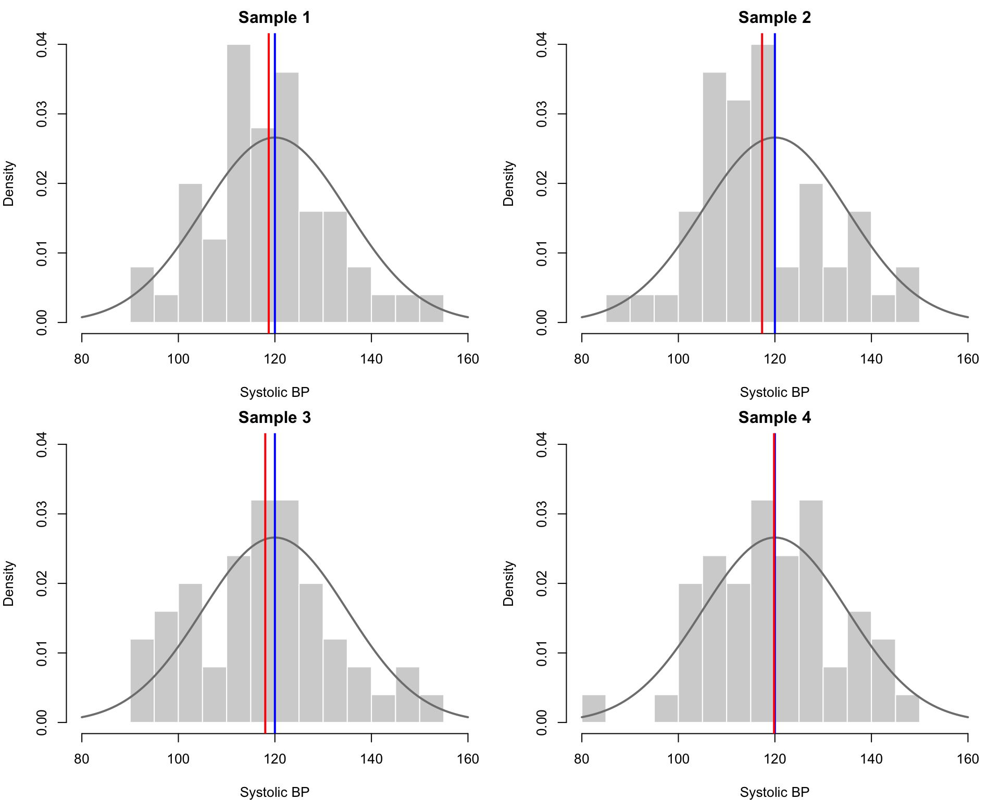
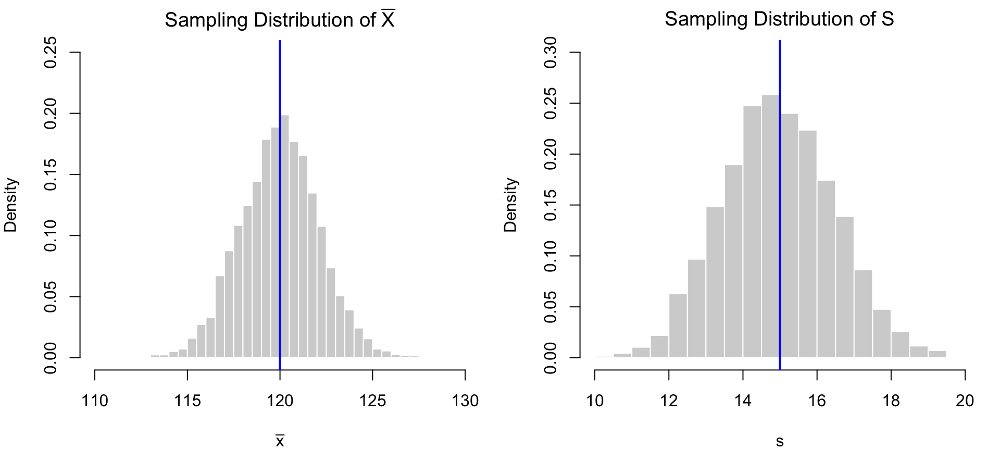
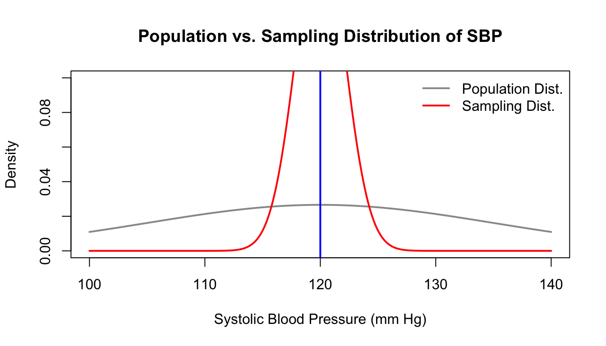
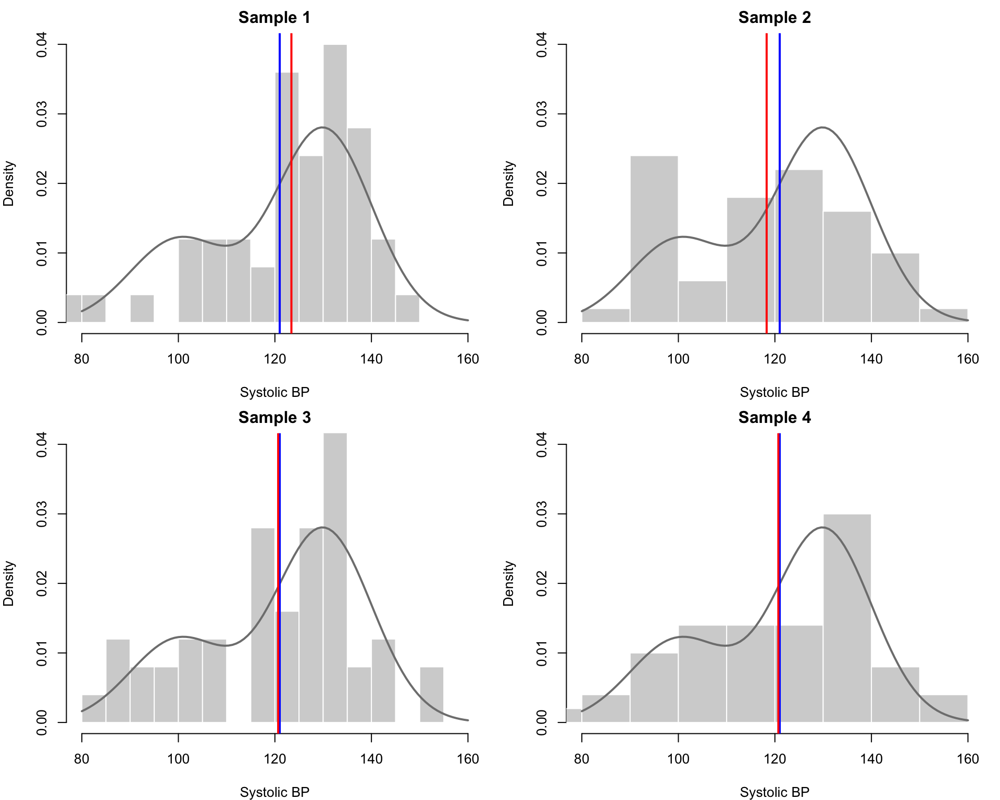
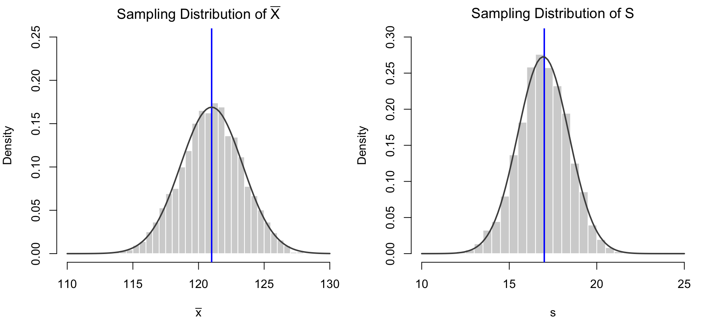

Chapter 8 Sampling Distributions and Central Limit Theorem
8.1 What Is a Sampling Distribution, and Why Should You Care?
In previous chapters, we developed the foundational tools necessary for working with random variables. We began by examining individual random variables and their associated probability distributions, and we learned how to characterize those distributions using quantities such as the mean and standard deviation. We then extended these ideas to consider multiple random variables simultaneously, exploring concepts such as joint distributions, conditional distributions, and correlation.
We are now ready to build toward one of the central goals of the field of Statistics: statistical inference. Statistical inference refers to the set of methods by which we use data to draw confident conclusions about underlying population characteristics. It is the foundation for a wide range of real-world applications, from scientific research to public policy to business decision-making.
To motivate this next stage of our development, consider a standard scenario: we wish to learn about a numeric characteristic of a population (for example, the average daily screen time among teenagers). We obtain a sample of \(n\) individuals and record their values \((X_1, X_2, \dots, X_n)\). Each \(X_i\) is a random variable, and we compute a sample statistic (such as the sample mean) as a function of all \(n\) of these values.
Because each \(X_i\) is random, the sample statistic itself is also a random variable. As such, it has a probability distribution of its own, referred to as a sampling distribution. The concept of a sampling distribution is central to the practice of statistical inference. For example, if we wish to construct a confidence interval or carry out a hypothesis test, we must understand the behavior of the corresponding sample statistic—e.g., sample mean—across repeated samples.
This chapter introduces the idea of a sampling distribution, illustrates its properties through simulation, and culminates in the statement of the Central Limit Theorem, one of the most powerful and widely used results in all of Statistics.
8.1.1 Preliminary Definitions
Before we begin working with sampling distributions in detail, we introduce three key concepts: random sample, statistic, and sampling distribution.
Definition 8.1 A collection of random variables \(X_1, X_2, \dots, X_n\) is called a random sample of size \(n\) from a population if:
- The \(X_i\) are independent random variables (See 7.5 for the definition)
- Each \(X_i\) has the same probability distribution (i.e., they are identically distributed), and
In this case, we say that the \(X_i\) are independent and identically distributed (iid) random variables.
Definition 8.2 A statistic is any function of a sample. That is, if \(X_1, X_2, \dots, X_n\) form a random sample, then any quantity computed using only these values (such as the sample mean \(\bar{X} = \frac{1}{n} \sum_{i=1}^n X_i\), the sample median, or the sample standard deviation) is a statistic.
Definition 8.3 The sampling distribution of a statistic is the probability distribution of that statistic.
In other words, the sampling distribution describes how the statistic would vary across different samples drawn from the same population.
Example 8.1 Suppose we are interested in the average systolic blood pressure among adult residents of a city. This population parameter—denote it \(\mu\)—represents a fixed but unknown quantity.
To learn about \(\mu\), we plan to select a random sample of \(n = 50\) individuals and measure their systolic blood pressure values, denoted \(X_1, X_2, \dots, X_{50}\). Each \(X_i\) is a random variable representing the blood pressure measurement for one randomly selected individual.
We plan to compute the sample mean \(\bar{X} = \frac{1}{50} \sum_{i=1}^{50} X_i\) as an estimate of \(\mu\).
Very important: we haven't drawn the sample, yet, and hence the \(X_i\) are random variables, not fixed numbers!
Because each \(X_i\) is random, \(\bar{X}\) is also a random variable—and thus has its own probability distribution. This distribution is known as the sampling distribution. Understanding the shape, center, and spread of this sampling distribution is crucial for drawing reliable conclusions about \(\mu\).
Thus, a sample statistic is a random variable and has its own probability distribution (its sampling distribution). Like any probability distribution, a sampling distribution has a mean and a standard deviation. Just as the distribution of a statistic is given a special name — sampling distribution — the standard deviation of a statistic is also given a special name: standard error.
Definition 8.4 Let \(\hat{\theta}\) be a sample statistic (such as a sample mean, proportion, or regression coefficient). The standard error of \(\hat{\theta}\) is the standard deviation of its sampling distribution:
\[ \text{SE}(\hat{\theta}) = \sqrt{\text{Var}(\hat{\theta})} \]
The standard error measures how much the statistic \(\hat{\theta}\) would vary across repeated random samples from the same population. It provides a sense of the precision of \(\hat{\theta}\) as an estimator of the corresponding population parameter.
8.2 Illustration Via Simulation
In practice, we generally take only a single random sample and hence observe only one realized value of a sample statistic (such as the sample mean). However, this must be interpretted as a single draw from a sampling distribution.
Therefore, we can get more intuition about this process via simulation, which allows us to conduct the thought experiment: what if we had the time and money to collect many random samples?
In the remainder of this section, we present simulations to demonstrate the key features of sampling distributions. The code examples are intentionally written using basic R syntax and graphics, making them accessible for students to explore and run on their own.
8.2.1 Simulation Setup: Normal Population
We return to the context introduced in Example 8.1. Suppose that systolic blood pressure (SBP) in a certain adult population follows a Normal distribution with mean \(\mu = 120\) mmHg and standard deviation \(\sigma = 15\) mmHg. We take repeated random samples of size \(n = 50\) from this population and compute the sample mean each time.
The following R code generates 5000 random samples, each of size 50, and stores them in a \(5000 \times 50\) matrix.
Important: Again, we emphasize that this is a thought experiment; not an actual, viable statistical procedure.
set.seed(42)
# Population parameters
mu <- 120
sigma <- 15
n <- 50
N <- 5000
# Simulate samples
samples <- matrix(rnorm(N * n, mean = mu, sd = sigma), nrow = N)
# Compute sample means and sds
sample_means <- apply(samples, 1, mean)
sample_sds <- apply(samples, 1, sd)We then plot histograms of the first four samples, overlaying blue tick marks at the true population mean \(\mu = 120\) and red tick marks at the corresponding sample means.

Figure 8.1: Histograms of the first four random samples from a Normal population. The smooth grey density curve corresponds to the population distribution pdf. The blue vertical line segment corresponds to the population mean, while the red vertical line segment corresponds to the sample mean.
We can summarize the results of the previous figure by noting that each histogram represents one simulated sample of size \(n = 50\) drawn from the same Normal population. While each sample was drawn from a distribution with population mean \(\mu = 120\) and population standard deviation \(\sigma = 15\), the individual sample means and sample standard deviations differ slightly from one another due to the randomness inherent in sampling.
The table below reports the computed sample mean \(\bar{x}\) and sample standard deviation \(s\) for each of the first four samples illustrated in Figure 8.1, which we used to visualize the randomness of sample-level outcomes.
| Sample | \(\bar{x}\) | \(s\) |
|---|---|---|
| 1 | 118.72 | 12.54 |
| 2 | 117.35 | 13.63 |
| 3 | 118.00 | 15.22 |
| 4 | 119.83 | 13.64 |
We now create histograms to illustrate the sample statistics \(\bar{X}\) and \(S\) for all of the \(N\) simulated samples.

Figure 8.2: Sampling distributions of the sample mean and sample standard deviation (Normal population). The blue vertical line segments correspond to the population parameter values.
What we are looking at in Figure 8.2 are the sampling distributions for the sample statistics \(\bar{X}\) and \(S\). In practice, we typically take one random sample of size \(n\), from which we compute a single observed value for each sample statistic. However, for the purposes of statistical inference—such as constructing confidence intervals or performing hypothesis tests—we require knowledge of the sampling distributions that govern what would be observed if we were to repeat our study many times under the same conditions.
As this is a simulation, we have the luxury here of seeing the actual sampling distributions. In real applications, though, we generally have access to only one sample, so we must rely on theoretical results or approximations to estimate the relevant sampling distributions. We will return to this issue shortly, particularly when we introduce the Central Limit Theorem.
While the focus of this chapter is on the sample mean \(\bar{X}\) — and while many applications of statistical inference do indeed center on the population mean — the idea of a sampling distribution applies to any statistic.
8.3 The Distribution of the Sample Mean
Often—though not always—our interest is in conducting statistical inference on a population mean. For example:
- In a health context, we might be interested in the average systolic blood pressure, average body weight, or mean survival time.
- In a finance context, we might be concerned with the average daily price of a stock or the mean return on investment.
- In an education context, we might study the average test score across students.
- In a manufacturing context, we may examine the average weight, length, or defect rate of products coming off a production line.
In each of these cases, we obtain a sample of data and compute the sample mean \(\bar{X}\) to estimate the corresponding population mean \(\mu\). Because \(\bar{X}\) is a function of random variables, it is itself a random variable—and therefore has a sampling distribution. We now turn our attention to the specific form of that distribution under certain assumptions.
We begin with a general result about linear combinations of independent random variables.
Proposition 8.1 Let \(X_1, \dots, X_n\) be independent random variables, and let \(a_1, \dots, a_n\) be constants. Then:
- The expected value of a linear combination is the linear combination of the expected values:
\[ E\left[ \sum_{i=1}^n a_i X_i \right] = \sum_{i=1}^n a_i E[X_i] \]
- If the \(X_i\) are also mutually independent, then the variance of the linear combination is:
\[ \text{Var}\left( \sum_{i=1}^n a_i X_i \right) = \sum_{i=1}^n a_i^2 \text{Var}[X_i] \]
If the \(X_i\) are identically distributed (in addition to being independent), we can derive the mean and variance of their sample mean.
Proposition 8.2 Suppose \(X_1, \dots, X_n\) are independent and identically distributed (i.i.d.) random variables with mean \(\mu\) and variance \(\sigma^2\). Then the sample mean
\[ \bar{X} = \frac{1}{n} \sum_{i=1}^n X_i \]
has expected value and variance:
\[ E[\bar{X}] = \mu, \quad \text{Var}[\bar{X}] = \frac{\sigma^2}{n} \]
These results do not assume anything about the shape of the distribution of each \(X_i\)—only that the sample is random and the observations are independent and identically distributed. However, in order to make statements about the form of the sampling distribution of \(\bar{X}\) (i.e., its shape), we must impose stronger assumptions.
Proposition 8.3 Let \(X_1, \dots, X_n\) be i.i.d. random variables drawn from a Normal distribution with mean \(\mu\) and variance \(\sigma^2\). Then the sample mean \(\bar{X}\) is also Normally distributed:
\[ \bar{X} \sim N\left(\mu, \frac{\sigma^2}{n} \right) \]
This result allows us to derive exact results for inference on the population mean when the population distribution is Normal. However, real-world data are rarely perfectly Normal. Does that mean we cannot use these results in practice?
Fortunately, the answer is no. Even when the population distribution is not Normal, it turns out that the sampling distribution of the sample mean \(\bar{X}\) often behaves approximately Normally — provided the sample size is sufficiently large. This powerful and widely used result is known as the Central Limit Theorem. We explore this idea in detail in the next section.
Example 8.2 Continuing the context of Example 8.1, suppose that systolic blood pressure (SBP) in the population follows a Normal distribution with mean \(\mu = 120\) and standard deviation \(\sigma = 15\). We take a random sample of \(n = 50\) individuals and compute the sample mean \(\bar{X}\). By Proposition 8.3, we know that the sampling distribution of \(\bar{X}\) is also Normal, with mean \(\mu_{\bar{X}} = \mu = 120\) and standard deviation (standard error)
\[ \sigma_{\bar{X}} = \frac{\sigma}{\sqrt{n}} = \frac{15}{\sqrt{50}} \approx 2.12 \]
The plot below shows both the population distribution (in grey) and the sampling distribution of \(\bar{X}\) (in black). Notice that the sampling distribution is more concentrated around the mean.

Figure 8.3: Population distribution (grey) and sampling distribution of sample mean SBP (red)
As the formula for \(\sigma_{\bar{X}}\) shows, the sampling distribution of the sample mean has smaller spread than the population distribution. This makes sense: there is more variability in a single observation than in the average of many. As \(n\) increases, the standard error of \(\bar{X}\) decreases. The appearance of \(\sqrt{n}\) in the denominator reflects the idea that averaging over more observations tends to stabilize the average. This reflects the idea that averaging over more observations tends to stabilize the estimate.
Let us now answer a question using this sampling distribution. Suppose that we define a "normal" range for the sample mean to be between 115 and 125 mm Hg. What is the probability that \(\bar{X}\) falls outside this range?
Solution: We compute:
# Compute probability of sample mean outisde of normal range)
lower_tail <- pnorm(115, mean = mu, sd = se)
upper_tail <- 1 - pnorm(125, mean = mu, sd = se)
lower_tail + upper_tail## [1] 0.01842213This result gives the probability of observing a sample mean more than 5 mm Hg away from the true population mean, assuming SBP is Normally distributed in the population. It quantifies how much variability we expect in \(\bar{X}\) due to sampling, and provides the probabilistic foundation for statistical inference.
Note that it is much more likely that we would observe an SBP value for a single individual that is outside of our normal range than it is that we would observe a sample mean (\(n = 50\)) that is outside of our normal range. As we computed above, the latter probability is about 0.018, while the former probability is about 0.739.
# Compute probability of individual SBP outside of normal range
lower_tail <- pnorm(115, mean = mu, sd = sigma)
upper_tail <- 1 - pnorm(125, mean = mu, sd = sigma)
lower_tail + upper_tail## [1] 0.73888278.4 The Central Limit Theorem
In the previous section, we saw that if the population distribution is Normal, then the sampling distribution of the sample mean \(\bar{X}\) is also Normal, regardless of the sample size. But what if the population distribution is not Normal?
This was a problem that interested and baffled scientists for centuries. In particular, Sir Francis Galton, the discoverer of the multivariate normal and correlation itself and coiner of the term 'nature vs. nurture', sought to show that traits were purely genetic. However, we observed that:
A population maintains a normal distribution of traits from generation to generation with the notion of inheritance. It seems that a large number of factors operate independently on offspring, leading to the normal distribution of a trait in each generation.
He didn't know it at the time, but he was the unintentional victim of the central limit theorem!
The central limit theorem isn't named with this idea in mind, but it is indeed central to many Statistical methods. The Central Limit Theorem tells us that the sampling distribution of any sum (even the "large number of factors" that Galton observed) tends to have a Normal distribution, even when the population distribution is not Normal—provided the sample size is sufficiently large. This is one of the most important and widely used results in all of Statistics. It is what enables us to use Normal-based methods in a wide variety of settings.
We now present the theorem formally.
Theorem 8.1 Let \(X_1, X_2, \dots, X_n\) be independent and identically distributed (i.i.d.) random variables with mean \(\mu\) and variance \(\sigma^2\). Then, as the sample size \(n\) increases, the distribution of \(\bar{X}\) converges to the Normal distribution with mean \(\mu_{\bar{X}} = \mu\) and variance \(\sigma_{\bar{X}}^2 = \sigma^2 / n\).
Equivalently, for large enough \(n\), the distribution of \(\bar{X}\) is approximately Normal:
\[ \bar{X} \; \dot{\sim} \; N\left( \mu, \frac{\sigma^2}{n} \right) \] In the previous expression \(\dot{\sim}\) means "is approximately distributed as."
For an introductory statistics class, we consider \(n\) `large enough' to be \(n \geq 30\).
In words, the Central Limit Theorem (CLT) tells us that, under mild assumptions, the sampling distribution of the sample mean becomes approximately Normal as the sample size grows—regardless of the shape of the original population distribution. The approximation typically improves as \(n\) increases. This result provides the theoretical foundation for many statistical methods, including confidence intervals and hypothesis tests for population means.
In the next subsection, we return to the simulation setup from Section 8.2.1, but this time we assume the population distribution is not Normal. We will observe how the CLT manifests in practice by examining the sampling distribution of \(\bar{X}\) across repeated random samples.
8.4.1 Simulation Setup: Non-Normal Population
To illustrate the Central Limit Theorem, we now repeat our simulation study under a non-Normal population distribution. Specifically, we assume that systolic blood pressure (SBP) in the population follows a mixture of two Normal distributions:
- With probability 0.3, SBP is drawn from \(N(100, 10^2)\)
- With probability 0.7, SBP is drawn from \(N(130, 10^2)\)
This creates a bimodal population distribution that is distinctly non-Normal.
We again simulate \(N = 5000\) random samples, each of size \(n = 50\), from this non-Normal population. We store each sample as a row of a \(5000 \times 50\) matrix and compute the sample mean \(\bar{x}\) and sample standard deviation \(s\) for each sample.
The following figure shows the first four simulated samples, as was done in Figure 8.1. Each histogram includes the population mean (blue line), the sample mean (red line), and a smooth approximation of the population pdf.

Figure 8.4: Histograms of the first four random samples from a Non-Normal population (mixture of two Normals). The grey curve shows the population pdf. Blue and red vertical line segments indicate the population and sample means, respectively.
We now create histograms of the sample means and sample standard deviations across all 5000 simulations.

Figure 8.5: Sampling distributions of the sample mean and sample standard deviation (mixture population). Blue lines represent the true population mean and SD.
The histograms in Figure 8.5 provide a striking illustration of the Central Limit Theorem in action. Even though the population distribution (a mixture of two Normal distributions) is clearly not Normal—exhibiting both skewness and multimodality—the sampling distribution of the sample mean \(\bar{X}\) appears to be approximately Normal.
This is exactly what the CLT predicts. When we compute a sample mean from a sufficiently large random sample, its distribution will tend to resemble a Normal distribution, regardless of the shape of the population distribution. This remarkable fact allows us to carry out inference procedures (e.g., confidence intervals, hypothesis tests) under relatively mild assumptions.
Of course, what constitutes a “sufficiently large” sample depends on how far the population distribution deviates from Normality. For many real-world applications, a sample size of \(n \geq 30\) is a reasonable rule of thumb. However, when the population distribution is highly skewed, has heavy tails, or is otherwise extreme, larger sample sizes may be required for the Normal approximation to be accurate.
The right panel of the figure shows the sampling distribution of the sample standard deviation \(s\). It, too, appears to be reasonably symmetric and bell-shaped. However, it is important to emphasize that the Central Limit Theorem, as we have stated it, applies only to the sample mean \(\bar{X}\). While there are CLT-like results for other statistics under certain conditions, we cannot assume that the sampling distribution of any statistic will be approximately Normal simply because \(n\) is large.
Thus, when performing statistical inference, one must exercise care: the validity of inference procedures depends on the specific form of the sampling distribution of the statistic in question—not all statistics enjoy the same asymptotic Normality as \(\bar{X}\).